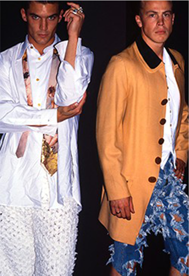
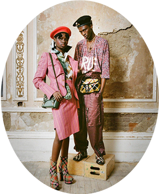
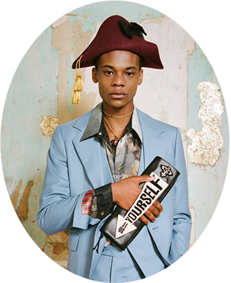
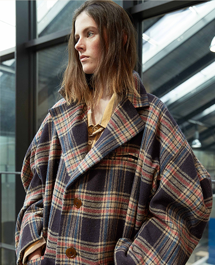

본문 콘텐츠영역
ABOUT
Vivienne Westwood is a fashion designer, the Knight of the Order of the British Empire, a rebel and an activist. Her activities are conceptual and social in nature. She took part in the campaigns for nuclear disarmament, the civil rights of disadvantages groups of people and against climate change.
- 
-
430 KINGS ROAD
The hippie movement was still the fashion look of late 1960s London, but this did not inspire Vivienne Westwood and Malcolm McLaren, they were more interested in rebellion and in particular 1950s clothing, music and memorabilia. Vivienne began by making Teddy Boy clothes for McLaren and in 1971 they opened Let it Rock at 430 Kings Road. By 1972 the designer’s interests had turned to biker clothing, zips and leather.The shop was re-branded with a skull and crossbones and renamed Too Fast to Live, Too Young to Die. Westwood and McLaren began to design t-shirts with provocative messages leading to their prosecution under the obscenity laws; their reaction was to re-brand the shop once again and produce even more hard core images.
LOOKBOOK
This collection’s refreshed melange starred a print of Daphnis and Chloe, a 1743 painting by François Boucher from the wonderful Wallace Collection that sumptuously pictures a sleeping shepherdess being ogled by a ripped shepherd. This starred across prints on shirting, T-shirts, denim, bodysuits, dresses and a frock-coatish parka, competing with clashing ginghams, stripes, herringbones, and checks. Not unlike Boucher, Westwood is a master at subverting apparent propriety to invoke the truthful and unruly; her signature brushstrokes of drunken tailoring and subversive drape were in full effect here.
- 
- 
CAMPAIGN
- 
-
Worlds End is the original Vivienne Westwood boutique, formerly known as; Let it Rock, Sex, Seditionaries, and Too Fast to Live, Too Young to Die.It has a triumphant history of creating ‘clothes for heroes’ – dandies, rockers, punks, and pirates. It reflects the history of the Worlds End boutique and is made up of carefully selected designs from the archive; from the punk collections of the ‘70s to the Worlds End of the early and mid-eighties through to today. The new clothing collection, which will be sold online and in selected Vivienne Westwood stores, reflects the history of the shop.
WORLD END CAMPAIGN
INSIDE
WESTWOOD WORLD
WESTWOOD ACTIVISM
04.22.2021
WESTWOOD WORLD
A SCOTTISH SYMBOL
04.09.2021
WESTWOOD WORLD
ANTI-ARMS TRADE
04.07.2021